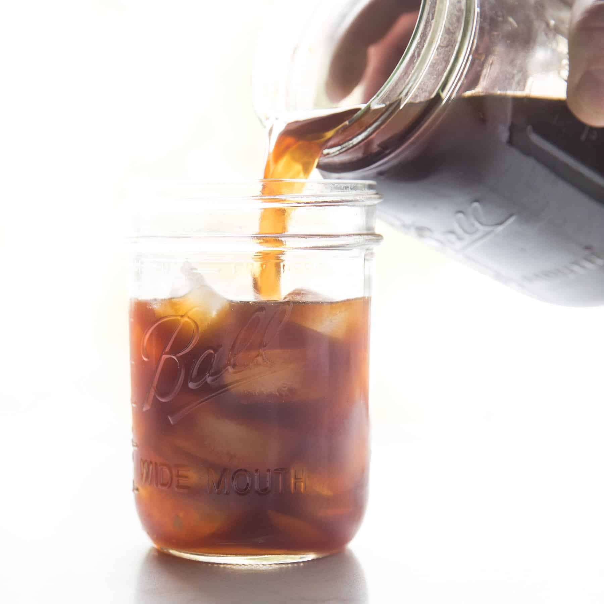

Welcome!
WFSC 496B/596B: Data Wrangling in R for Ecologists
About the Instructor
Ellen Bledsoe, PhD (she/her; they/them)
Asst. Professor of Practice in Data Science
School of Natural Resources & the Environment
Syllabus Review

Community Norms
- Remain curious and open
- Be engaged and present
- Refrain from judgement (for yourself or others); be ready to help
- Respect different lived experiences
- Assume good intentions, but recognize impact
- Others?
Introductions
- Name
- Pronouns (optional!)
- Field of study
- Undergrad: major/concentration/interests
- Grad: degree, lab group, research
- A “boring” fact about yourself (or you can just pass if you’re not comfortable!)

Homework for Tuesday
Linked on D2L under Week 1
Pre-Course Survey
https://tinyurl.com/DataWrangling-PreCourse-Sp2025